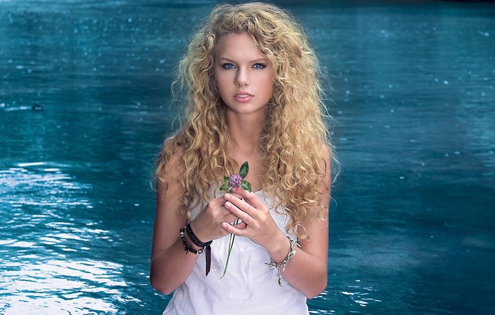
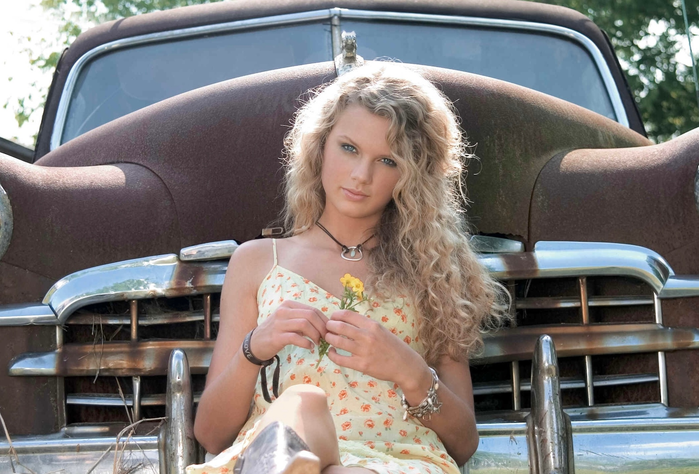
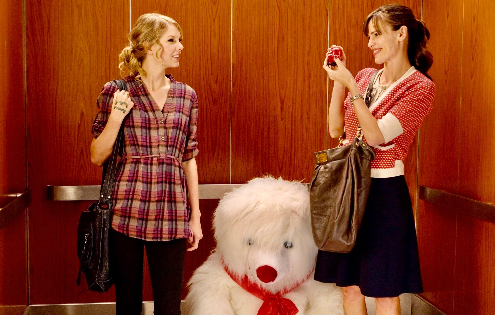
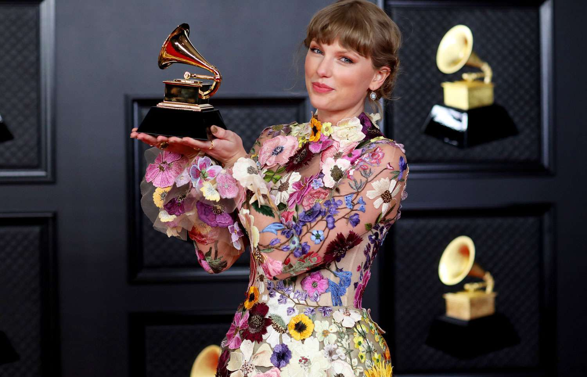
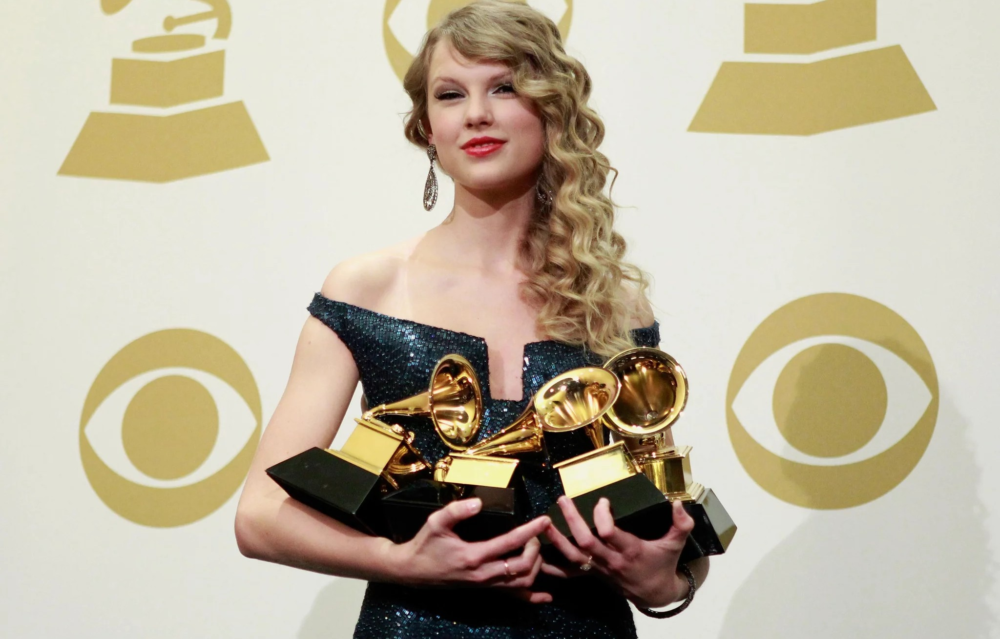

Comenzó su carrera musical en 2006 con el lanzamiento de su primer álbum homónimo, que incluía éxitos como "Teardrops on My Guitar" y "Our Song". Desde entonces, ha lanzado nueve álbumes más, cada uno con su propio estilo y sonido característico.
Taylor Swift es una cantante, compositora y actriz estadounidense nacida en Pensilvania en 1989. A lo largo de su carrera, ha logrado convertirse en una de las artistas más exitosas de la industria musical, con millones de discos vendidos y una gran cantidad de premios ganados.



Además de su trabajo en la música, Taylor Swift también ha incursionado en la actuación, participando en películas como "Valentine's Day" y "The Giver". En 2019, protagonizó la adaptación cinematográfica del musical "Cats".
A lo largo de su carrera, Taylor Swift ha recibido numerosos premios y reconocimientos, incluyendo doce premios Grammy y el título de Artista del Año en los American Music Awards en seis ocasiones. También ha sido nombrada una de las personas más influyentes del mundo por la revista Time.

